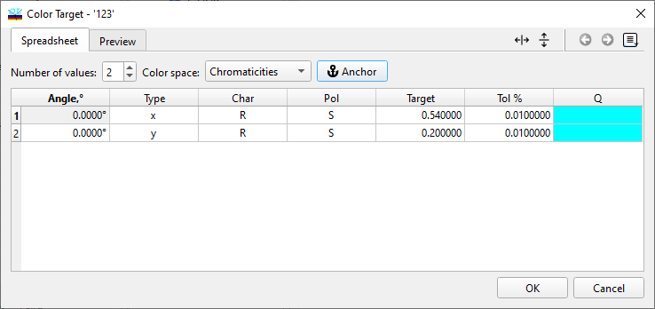
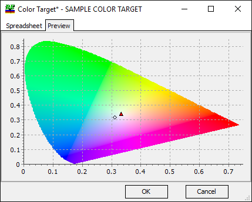

Color Target
Setting Up the Color Target
Navigation: OptiLayer Menu Commands > Data Menu >
Setting Up the Color Target
` <integral_target.html>`__ ` <idh_menu_data.html>`__ ` <color_range_targets.html>`__
The Color Target feature outlines the necessary color coordinates for reflected or transmitted light. When you open the Spreadsheet tab, you’ll see two sections. The upper part is where you can input the total number of color targets, while the lower part displays and formats the data in a spreadsheet. With the Color Space drop-down menu, you can select the Color Target and apply the correct conventions for your color specifications.

The program can handle up to 99 color targets. When you input the number of color targets in the upper section of the window, the corresponding number of rows will appear in the spreadsheet in the lower section. Each row typically represents one color target, although identical data rows are permissible. Each row in the spreadsheet includes the following information:
Angle: The angle of incidence.
Type: Characteristics that align with the selected Color Space. If the Color Space changes, the available characteristics in this column will update accordingly.
Char: Spectral characteristic, such as R (reflectance), BR (Back Reflectance), or T (transmittance).
Pol: Polarization type, which can be S, P, or A (averaged).
Target: The value of the X, Y, or Z coordinate, or other coordinates based on the Type setting.
Tol%: Tolerance, measured in percent, used for proper normalization of a merit function.
Q: Target value qualifier similar to Target Qualifiers and may have values A, B, or be left blank (for a standard target). The R qualifier is used for Range Color Targets specified as convex polygons. Range Color Targets are available for certain color spaces only. The qualifier “C” corresponds to AnChor color, where the target represents the difference between the current color value and a similar color value for the Anchor Color.
It is important to note that color-related calculations will default to using a light source and detector with a uniform spectral power distribution if no specific Light Source or Detector is explicitly stated.
Additionally, the Preview tab can be utilized for a quick check of the entered targets.

The crosses on the Preview window indicate the targets that have been entered on the Spreadsheet tab.